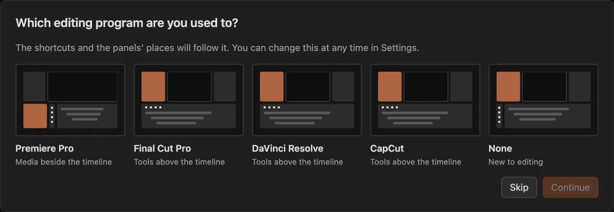
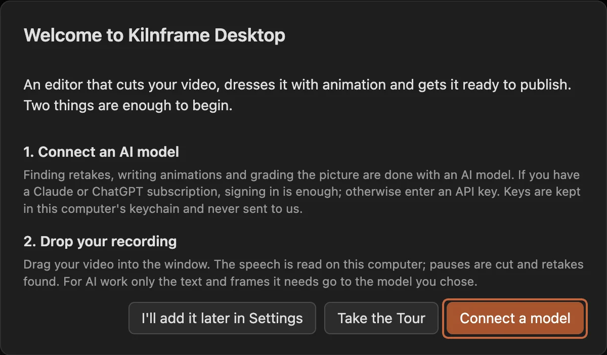

Install
Kilnframe Desktop runs on Mac, Windows and Linux. The steps are short on each; what happens on the first start is the same everywhere.
Version 0.1.0. Download it for Mac and Linux from the home page. Windows comes from the Microsoft Store in a few days; leave your email and we write when it is there.
What you need
| System | What runs it |
|---|---|
| Mac | Apple silicon (M1 or later). |
| Windows | Windows 10 (version 1809) or later, x64 or Arm. From the Microsoft Store, as a Beta. |
| Linux | x64 or Arm64, as an AppImage. Beta. |
16 GB of memory is recommended. A graphics card is not required; when there is one (NVIDIA, AMD, Intel or Apple), exports use it and run several times faster.
Mac
- DownloadDownload the Mac version from kilnframe.com.
- Move it to ApplicationsOpen the downloaded file and drag Kilnframe Desktop into the Applications folder.
- Open itOpen it from Applications. New versions arrive by themselves: the app asks before it installs one.
Windows
On Windows, Kilnframe Desktop comes only from the Microsoft Store.
- Find it in the StoreOpen the Microsoft Store and search for Kilnframe Desktop, or follow the link on kilnframe.com.
- InstallPress Get (or Install). The Store keeps the app up to date.
Linux
On Linux, Kilnframe Desktop is one AppImage file: nothing to install.
- DownloadDownload the AppImage for your computer (x64 or Arm64).
- Let it runRight-click the file, choose Properties, and in Permissions turn on Allow executing file as program. In a terminal,
chmod +xon the file does the same. - Open itDouble-click the file.
Your keys and your licence are kept in the system keychain. On Linux that needs a keyring service, such as GNOME Keyring or KWallet, to be running.
The first start
Kilnframe asks two things, once.
First, Which editing program are you used to? Pick Premiere Pro, Final Cut Pro, DaVinci Resolve or CapCut, and the shortcuts and the places of the panels follow it. Pick None if you are new to editing. You can change it later in Settings.

Then the welcome window. It shows what is needed to begin: 1. Connect an AI model and 2. Drop your recording, and how many days of the trial are left. Connect a model opens the AI settings; I'll add it later in Settings closes the window; Take the Tour walks you through the editor.

Next: your first video, or how to use your Claude or ChatGPT plan.